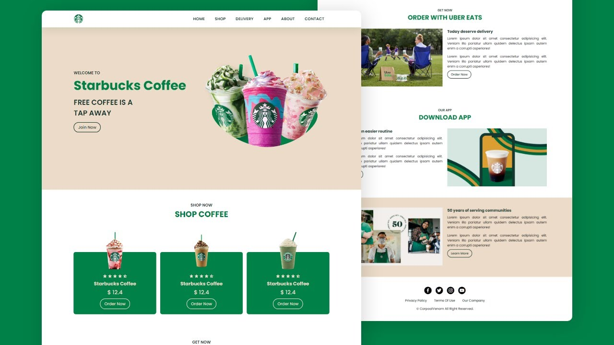

My Projects
Traffic Data Analysis System
A Python project that performs data validation, processing, and analysis on traffic survey data sets.
Airport Data Analysis System
A Python tool to analyze and visualize air traffic departure data from European airports.

Starbucks Website Design
A responsive and interactive Starbucks landing page built using HTML, CSS, and JavaScript.

Life Below Water
A collaborative website project built using HTML and CSS, promoting SDG awareness.

Portfolio Website
A personal portfolio designed with HTML and CSS to showcase my skills and projects.